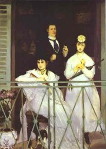
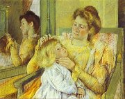

Obsah
Francie
Anglie a USA
Rusko
Český realismus
Česká historická próza
Realistické drama
+ Literární fantazie
Kritický realismus
Jaký je rozdíl mezi realitou, realismem, kritickým realismem, reálnem, reáliemi, realizací, reálkou a reálem?
Srovnej realismus s romantismem. V čem se liší? Co mají společného?
Které české realisty znáš?
Naturalismus
Vysvětli význam slov naturalismus, naturismus, naturální, naturista, naturalistický, naturálie, naturalizace, naturel, natura a nátura.
Co si myslíš o Tainově výroku „Neřest a ctnost jsou produkty stejně jako vitriol a cukr.“?
|
REALISMUS A NATURALISMUS
Realistické tendence doprovázely umění od jeho nejranějších začátků. Za bezprostřední předchůdce realistů bývají někdy považováni Swift a Defoe. Ačkoliv jsou Gulliverovy cesty především fantastické, obsahují konkrétní satirické narážky na dobovou anglickou společnost.
Kritický realismus
Nový směr později nazvaný kritický realismus se začal postupně prosazovat od 30. let 19. století. Přestože řada realistů psala v mládí romantická díla, záhy se vydala směrem zcela opačným.
Kritičtí realisté chtěli pravdivě popsat současnost. Zaměřili se na negativní společenské a sociální jevy. Kritizovali společnost založenou na nadvládě peněz, lžích, manipulaci, bezohlednosti a kariérismu. Aby jejich příběhy působily věrohodně, umísťují je do typického prostředí. Také jednotlivé postavy jsou přehlídkou rozličných společenských a charakterových typů. Přestože jsou jejich osudy vymyšlené, realističtí spisovatelé se inspirovali skutečnými událostmi, studovali odbornou literaturu a osobně navštěvovali místa děje svých knih.
Typickým realistickým útvarem byl románový cyklus, román nebo povídka. Oblíbená byla i dramatická tvorba. Poezii realisté prakticky nepsali.
K předním realistům patří Francouzi Balzac, Flaubert a Stendhal, Rusové Tolstoj, Turgeněv, Gončarov, Gogol a Čechov, Angličan Dickens, Američané Melville, Twain a London nebo norský dramatik Ibsen.
Naturalismus
Naturalismus někdy bývá řazen k moderním uměleckým směrům. Staví na názorech francouzského filozofa Hippolyta Taina (1828-1893) o vlivu rasy (dědičnosti) a prostředí na člověka a dalších vědců, například P.Lucase (Filozofické a fyziologické pojednání o přirozené dědičnosti) nebo Ch.Letourneaua (Fyziologie vášní).
Naturalistickou metodu použil poprvé francouzský spisovatel Émile Zola ve svém románu Tereza Raquinová (1867). Naturalisté důsledně přenášejí nové přírodovědné poznatky do literatury. Člověka chápou jako biologický objekt. Neuznávají psychologii postav, ale pouze jejich fyziologii. Tvrdí, že lidský osud je determinován prostředím, ve kterém žije, a povaha je určena zákony dědičnosti. Naturalisté mají sklon k fatalismu. Pomocí analytických a objektivních metod popisu se snaží navodit dojem vědeckosti. O románu tvrdili, že nepatří do struktur uměleckých, ale vědeckých. Spisovatelé líčí lidi na okraji společnosti (alkoholiky, prostitutky, dělníky, chudinu...). Jejich vidění světa je značně pesimistické.
K naturalismu měl blízko Francouz Maupassant, Rus Dostojevskij nebo Američan Crane, v Čechách potom Čapek-Chod, Šlejhar a bratři Mrštíkové.
|
Idealismus a akademismus
Daumier: Zápasící školy: klasický idealismus proti realismu
Protipólem realismu a později moderních uměleckých směrů nebyl romantismus, ale tzv. idealismus, který se prosadil v oficiální tvorbě. Pro akademismus byl typický návrat ke klasickým formám. Obsah musel reprezentovat vznešené ideje. Autoři potlačovali skutečné emoce a libovali si v idealizaci, alegoriích a formální dokonalosti. Akademici byli oslavováni dobovou kritikou, ale dnes je jejich tvorba skoro zapomenuta.

Jean-Léon Gérôme (1824-1904): Řekové u kohoutích zápasů (akademická malba)
|
Průmyslová a vědeckotechnická revoluce

Eiffelova věž v Paříži
|
Průmyslová a vědeckotechnická revoluce
19. století bylo ve znamení převratných objevů a vynálezů. Rozvíjí se především technika, přírodní vědy a průmysl. Průmyslová a vědeckotechnická revoluce během několika desetiletí změnila tvář celého světa.
Už roku 1782 zdokonalil James Watt parní stroj, který našel řadu využití. Poháněl stroje v továrnách i parníky. George Stephenson začal vyrábět parní lokomotivy. Dochází k rozvoji železniční i lodní dopravy, nebe brázdí balony a vzducholodě. Roste těžba uhlí, které spalují nejen parní stroje, ale také hutě, ve kterých se taví železo a vyrábí ocel. Všude vyrůstají továrny a další průmyslové stavby. Vynalezen byl telegraf, automobil se spalovacím motorem či tiskařská rotačka. Výzkumem elektřiny se zabývali Volta, Ampère, Ohm nebo Hertz. Využívat se ale začala až na konci 19. století díky Edisonovým vynálezům.
Značného pokroku dosáhlo lékařství. Byli objeveni původci řady smrtelných chorob – mikroorganismy. Nové způsoby léčby, očkování, hygiena a lepší životní podmínky přispěly k populační explozi.
Anglický přírodovědec Charles Darwin (1809-1882) vystoupil po důkladném studiu živočišných druhů s myšlenkou evoluce. Jeho knihy O vzniku druhů přirozeným výběrem (1859) a O původu člověka způsobily skandál, protože byly v rozporu s Biblí a křesťanskou ideologií. Myšlenky darwinismu přejali i naturalističtí spisovatelé.
|

Darwin (vlevo) na dobové karikatuře
Telegrafisté používali Morseovu abecedu. Popiš ji. Používá se morseovka i dnes? Ve kterých oblastech?
|
Kapitalismus
George Cruikshank: Chudé pracující dívky se snaží vydělat si na živobytí výrobou nějakých elegantních tretek na prodej (karikatura)
|
Kapitalismus
Rozvoj průmyslu a zavádění nových technologií do výroby i zemědělství ovlivnilo i sociální vztahy. Na venkově skupují půdu velkostatkáři. Drobní rolníci jim nemohou konkurovat, a tak prodávají svá pole a živí se jako námezdníci. Jiní hledají obživu ve městech. Ruční práci v manufakturách brzy nahradila strojová a pásová výroba v továrnách. Nejvlivnější skupinou obyvatelstva se stávají podnikatelé, kteří prodávají výrobky a služby. Aby si udrželi pozici na trhu, musejí své zboží neustále vylepšovat, snižovat náklady, zvyšovat produktivitu práce a přizpůsobovat nabídku poptávce. Tvrdá konkurence a chybějící regulační mechanismy vedou k častým krachům. Velké podniky ničí malé a budují si monopolní postavení na trhu. Ekonomika získává nadnárodní charakter. Období hospodářské konjunktury se pravidelně střídá s krizí, jejímž důsledkem je masové propouštění zaměstnanců a zhoršování životních podmínek dělníků. I tato nová sociální skupina se hlásí o slovo. Dlouhá pracovní doba, časté úrazy, chybějící sociální jistoty, nízké mzdy nebo tvrdá práce pro ženy a děti vyvolávají odpor. Zaměstnanci zprvu rozbíjejí stroje, později se začínají organizovat v odborech, demonstrují za svá práva, stávkují a zapojují se i do politiky. Nové sociálně demokratické strany jednotlivých zemí se sdružily v mezinárodní organizaci – tzv. I. internacionála (1864). Požadovaly všeobecné volební právo a sociální reformy, které se ovšem prosazovaly velmi pomalu.
|

Daumier: Polévka
Jaký je program sociálně demokratických stran dnes?
Co si o něm myslíš?
Co dělají v současnosti odborové organizace?
Mají nějaká sdružení i podnikatelé? Jaká?
|
Společenské vědy

Karl Marx
Liberalista Adam Smith (1723-1790) popsal v knize Bohatství národů svůj pohled na ekonomické vztahy. Srovnej jeho pojetí s Marxovým. Kdo z nich má pravdu? Proč?
|
Společenské vědy
V 19. století dochází nejen k rozvoji přírodních věd, ale také společenských disciplín – psychologie, sociologie, ekonomie atd.
Zakladatel sociologie Francouz August Comte (1798-1857) vysvětlil v pojednání Systém pozitivní filozofie zásady pozitivismu. Comte se soustřeďuje na objektivní jevy a „drobná fakta“, snaží se být co nejvědečtější, a proto odmítá jakékoliv filozofické spekulace. Místo otázky „Proč?“ si klade otázku „Jak?“.
Německý materialista Karl Marx (1818-1883) navázal na myšlenky utopických socialistů, Hegela a dalších filozofů, ekonomů a sociologů. Ve svém díle Kapitál analyzoval kapitalismus a definoval pojmy jako hospodářská krize a konjunktura, základna a nadstavba, nadhodnota, kumulace kapitálu, monopolizace atd. Společně s Bedřichem Engelsem, autorem pojednání Podíl práce na polidštění opice, se stal ideologem dělnického hnutí. Jejich Manifest komunistické strany z roku 1848 rozlišuje dvě soupeřící třídy – proletariát (vykořisťovaní dělníci) a buržoazii (vykořisťovatelé) a přichází s myšlenkou třídního boje, jehož výsledkem by mělo být konečné vítězství proletariátu, vyvlastnění výrobních prostředků a nastolení spravedlivé beztřídní společnosti – komunismu, ve kterém nebude existovat vykořisťování, zotročování, soukromé vlastnictví ani peníze.
|
Utopický socialismus
Utopičtí socialisté (Saint-Simon, Fourier, Proudhon, Owen...) se jako první pokoušeli řešit vzniklé sociální problémy. Snili o lepší společnosti bez rozporů a konfliktů. Někteří dokonce dobrovolně nabídli dělníkům sociální výhody. Jejich projekty ale brzy zkrachovaly. Některé z nich byly navíc naprosto neuskutečnitelné...
Co si myslíš o utopických socialistech?
Jaké důsledky měla marxistická ideologie?
Co si myslíš o Marxovi?
Souhlasíš s jeho výrokem, že „náboženství je opium lidstva“? Proč?
|
Výtvarné umění
Millet: Klekání

Manet: Balkón
|
Architektura, malířství a sochařství
Realismus jako oficiální název pro nový umělecký směr prosazoval francouzský revolucionář a malíř Gustave Courbet (1819-1877), který v roce 1855 přímo pojmenoval svou výstavu Le Realisme. Courbet se snažil zachytit skutečnost co nejvěrněji. Bojoval proti klasickým estetickým ideálům a akademismu. Místo malebných výjevů, půvabných póz a působivých barev se soustředil na vnější realitu a nepřikrášlenou pravdu. Realismus vyjadřoval protest proti uhlazeným konvencím tehdejší doby a šokoval kritiky svou opravdovostí.
Architekturu realistická estetika neovlivnila, stejně jako hudbu. Vznikají ale významné technické projekty – mosty, tovární haly nebo železniční stavby s ocelovými konstrukcemi. Symbolem možností techniky se stala 300 metrů vysoká Eiffelova věž v Paříži z roku 1889, tehdy nejvyšší stavba světa. Na masivní příliv obyvatel do měst reagují urbanisté zbořením středověkých hradeb a asanací celých čtvrtí.
Přelom v zobrazování skutečnosti znamenal vynález fotografie (daguerrotypie) ve 30. letech 19. století. Z technické novinky a atrakce se postupně stalo svébytné umění.

Courbet: Pohřeb v Ornans
|

Corot: Katedrála v Chartres
Šest studií emocí: Odmítavost, Opovržení, Rozhořčení, Dobrá pohoda, Šibalství, Přemýšlení (model: Jan Evangelista Purkyně, foto: Emanuel Lokaj)
|
Internetové stránky
Marx, Engels: Manifest komunistické strany
Masters of photography
Gérôme, akademický malíř
Naturalismus
Česká fotografie 1840-1950
Encyklika papeže Pia IX. z roku 1864
o nejdůležitějších omylech věku
Exkurze
Musée d'Orsay, Paříž
Fotoatelier Langhans, Praha
Filmy
Většina realistických románů byla zfilmována. Které z nich jsi viděl/a?
Srovnej filmovou adaptaci s literární předlohou.

Cassattová: Matka česající vlasy svému dítěti
|
Doporučená četba
Birgus, V., Scheufler, P.: Fotografie v českých zemích (1839-1999), Grada Publishing, Praha 1999
Courbet, Gustave: Dokumenty, přel. V.Smetanová, SNKLHU, Praha 1958
Čtvero setkání s ruským realismem, Praha 1958
Darwin, Charles: Vlastní životopis, Praha 1951
Dneprov, V.: Problémy realismu, Praha 1961
Durozoi, G., Roussel, A.: Filozofický slovník, EWA Edition, Praha 1994
Fischer, Jan O.: Kritický realismus, Svoboda, Praha 1979
Girard, R.: Lež romantismu a pravda románu, Praha 1968
Charvát, Jaroslav a kol.: Dějiny novověku III, SPN, Praha 1973
Macková, Olga: Camille Corot, Odeon, Praha 1983
Manifesty francouzských realistů XIX. a XX. století, Praha 1950
Marx, K., Engels, B.: Manifest komunistické strany
Mejdřická, Květa a kol.: Dějiny novověku II, SPN, Praha 1969
Netopilík, Jakub: Co víte o filozofii 19. století, Horizont, Praha 1988
Perruchot, Henri: Život Édouarda Maneta, přel. V.Smetanová, SNKLU, Praha 1964 (román)
Pijoan, José: Dějiny umění, 8. díl, přel. Halasovi, Odeon, Praha 1990
Prahl, Roman: Edouard Manet, Odeon, Praha 1991
Sebrané spisy Marxe a Engelse (39 svazků)
Sedlář, Jaroslav: Realistické maliarstvo 19. storočia, Pallas, Bratislava 1979
Störig, Hans Joachim: Malé dějiny filozofie, Zvon, Praha 1992
Taine, Hippolyte: Dějiny anglické literatury, Praha 1913
Zweig, Stefan: Tři mistři, přel. Holubovi, Melantrich, Praha 1998 (Balzac, Dickens, Dostojevskij)
|
Vypracuj písemný referát o některé z uvedených knih.

Courbet: Dobrý den, pane Courbete!

Repin: D.I.Mendělejev
|
|